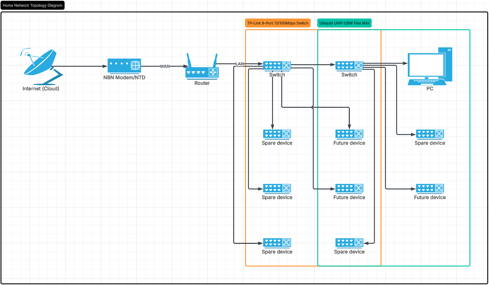

Physical Home Lab Network
A small lab environment using real managed switches to test network topology, PoE devices, and prepare for firewall integration.
Project Overview
This project documents a physical home lab built with real networking hardware. The goal is to understand how switches, routers, and endpoints interact in a small network environment — and to prepare for firewall and VLAN segmentation testing.
Unlike simulation tools, this lab uses real managed switches with actual traffic flowing between devices, giving hands-on experience with hardware configuration and troubleshooting.
Hardware Used
Network Topology

The NBN modem connects to the home router, which links to the Ubiquiti USW Flex Mini switch. The TP-Link PoE switch is connected to the Flex Mini, with the PC connecting through the TP-Link switch for testing. Future expansion includes PoE devices and a dedicated firewall.